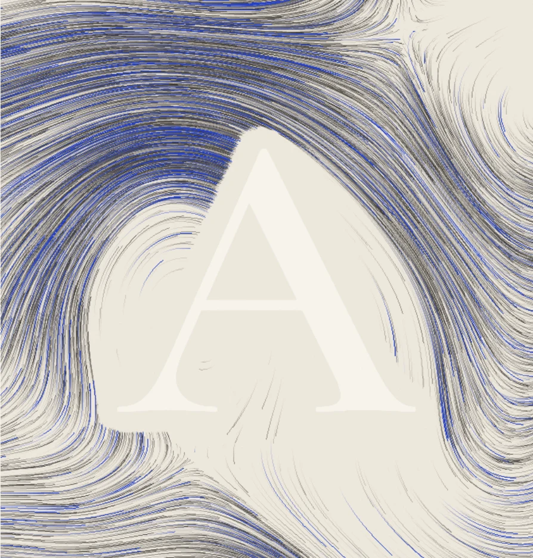
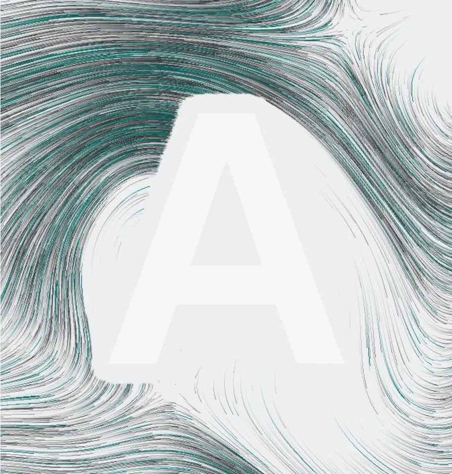
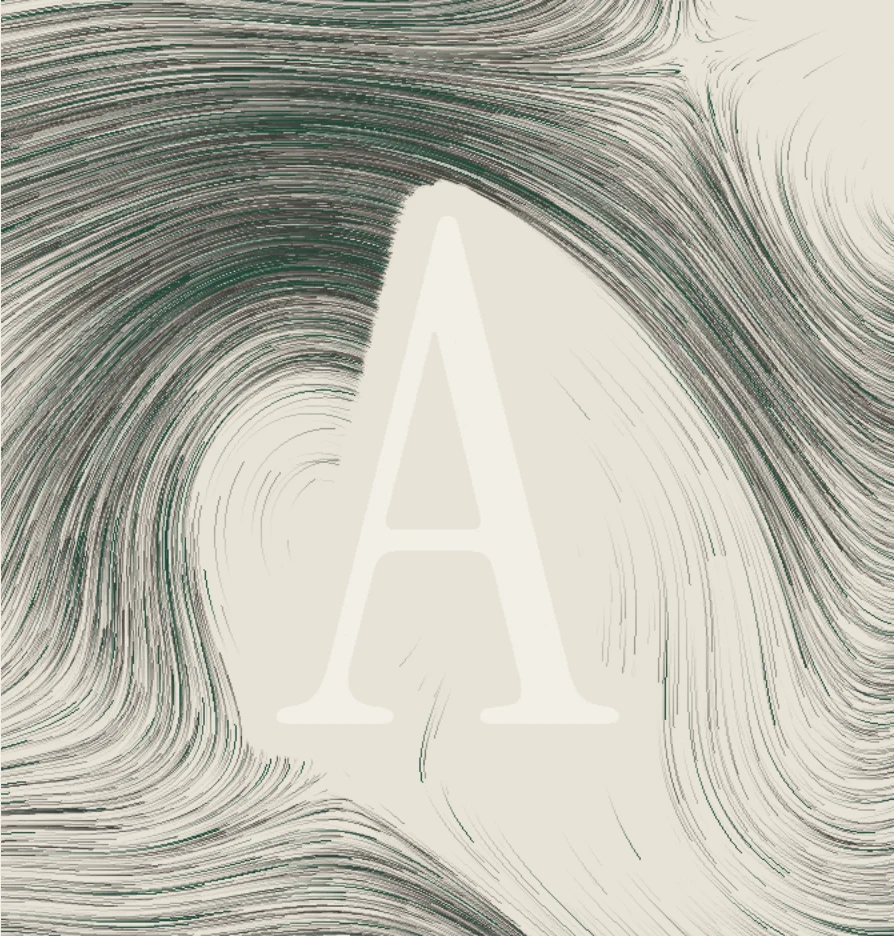

Alberto Tuveri
Software & AI Engineer · Creative Lead
From database schema to real-time WebGPU rendering and motion design.



Now · since May 2026
Now atSerSan
I own the front-end, WebGPU/3D and motion layer of what the studio ships, the AI work on its flagship platform, and the studio's creative direction.
SerSan is a custom software, automation and AI studio: Sersan Limited, London. I work remote, as Software & AI Engineer and Creative Lead.
sersan.io
Selected work
Nine works,on file
A trading platform and its AI mentor, a workshop ERP, a WebGPU studio site, a real-estate platform and a brand film at SerSan, and three projects from outside it.
-

01 · SerSan · live at spherenode.com
SphereNode
Vertical SaaS that replaced eight tools for the Italian retail-trading market.
-
68%
answer-policy accuracy, from 52%
No photograph on file
02 · SerSan · RAG mentor
Sphere AIMeasured on a 161-question bilingual evaluation set.
-
9
roles, default-deny on every table
No photograph on file
03 · SerSan · workshop ERP
Maintech OMAJob orders on a six-phase state machine, ten trade portals.
-
04 · SerSan · Jun – Sep 2026
sersan.io
Seventeen scroll-locked scenes on one continuous WebGPU canvas.
-
1.74 s
mobile LCP, from 4.75 s
No photograph on file
05 · SerSan · real-estate brand platform
Domus TuaBlocking time 572 ms → 274 ms, no layout shift.
-
64 s
in 4K, fourteen scenes
No photograph on file
06 · SerSan · identity and film
Brand filmHexagonal mark, custom display typeface, colour system.
-
Sub-second
geospatial caregiver search, PostGIS 3
No photograph on file
07 · ALS MCL Civitanova · freelance
Badante24hZero known auth vulnerabilities at launch.
-
—
no figure on file
No photograph on file
08 · DOIT S.r.l · internship
Voice AI AgentHands-free appointments in Microsoft Teams from audio notes.
-
10
roles, built by a team of three
No photograph on file
09 · University of Camerino
Supply ChainAgricultural supply-chain platform on Spring Boot, JWT RBAC.
Evidence
Measured before and after.
Two sets of figures with a before and an after: a 161-question bilingual evaluation set for Sphere AI, and page speed on real phones for Domus Tua.
Sphere AI · SerSan
Answer reliability, before and after
On a 161-question bilingual evaluation set. Citation correctness 100%, with zero locked-content leaks and zero fabricated citations.
-
Answer-policy accuracy
52%to68%
-
Over-answering on questions to withhold
56%to16%
-
Clarification precision
75%to94%
-
Clarification recall
32%to90%
-
Unsupported claims
1.9%to0.6%
Domus Tua · real phones
Fast on the phone in your hand
The mobile delay was traced to the cookie banner and the intro rebuilt to run in CSS rather than JavaScript. The cinematic experience stayed, with no layout shift.
-
Mobile largest-contentful-paint
4.75 sto1.74 s
-
Mobile blocking time
572 msto274 ms
Capabilities
What I build with
Eight groups of tools, each tied to the work that proves it.
01
Core
TypeScript · JavaScript (ES2024) · Python · Java · C / C++ · C#
ProofSupply chain
02
Front-End
React 19 · Next.js 16 (App Router) · Angular · Tailwind CSS v4 · GSAP · Lenis · Framer Motion
ProofDomus Tua
03
3D & Graphics
WebGPU · WGSL / TSL · three.js · React Three Fiber · GLSL / WebGL2 · GPGPU compute · Blender
Proofsersan.io
04
Back-End & DB
Node.js · Deno · Spring · Supabase · PostgreSQL · PostGIS · pgvector · MySQL
ProofMaintech OMA
05
AI
RAG & embeddings · LLM evaluation & guardrails · OpenAI / Anthropic / Gemini · Copilot Studio · Power Automate · Dataverse · Dynamics 365 · Claude Code / MCP
ProofSphere AI
06
Cloud & DevOps
Vercel · Azure (AD, Speech) · Cloudflare (Stream / R2) · GitHub Actions · Sentry · Docker
ProofSphereNode
07
Testing & Tooling
Playwright · Vitest · pgTAP · Lighthouse CI · ESLint · Prettier · Git
ProofMaintech OMA
08
Creative
Motion graphics & VFX (After Effects) · Video editing & post-production · Brand identity & logo design · Art direction · Typography · Sound design
ProofBrand film
About · path
Camerino,Trento,London
A B.Sc. at Camerino, an M.Sc. in AI Systems at Trento, and professional work since November 2025, remote for a London studio since May 2026.
Sep 2026 – Present · Education
M.Sc. in Artificial Intelligence Systems
University of Trento · Trento, Italy
May 2026 – Present · Experience
Software & AI Engineer · Creative Lead
SerSan, AI studio · Sersan Limited (London) · Remote
Jan 2026 – Present · Experience
Full-Stack Developer
ALS MCL Civitanova · Badante24h, a production PWA · Freelance · Marche, Italy
Nov 2025 – Feb 2026 · Experience
AI & Software Developer
DOIT S.r.l · a voice AI agent for Microsoft Teams · Internship · Fabriano, Italy
Jan 2022 – Apr 2026 · Education
B.Sc. in Computer Science
University of Camerino · Camerino, Italy
Thesis: From Autocomplete to Agentic Orchestration: Architectural Analysis and Security of OS-Level Agents